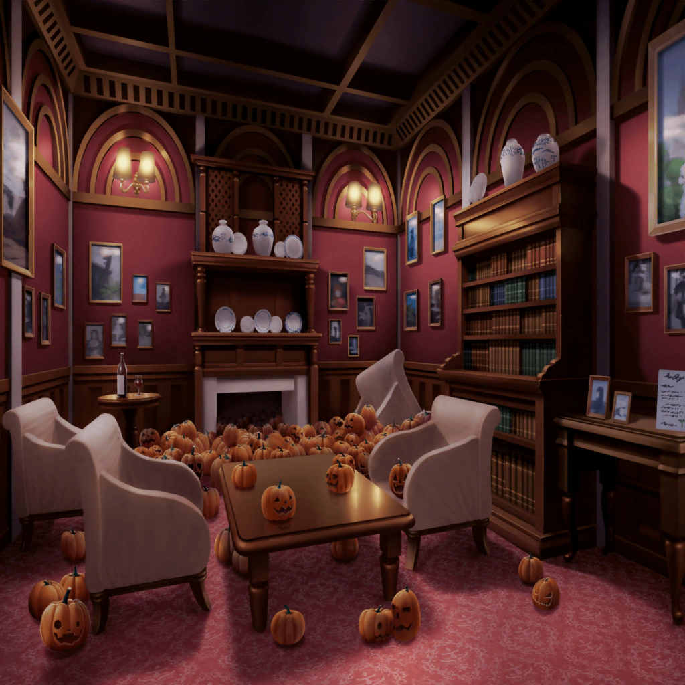
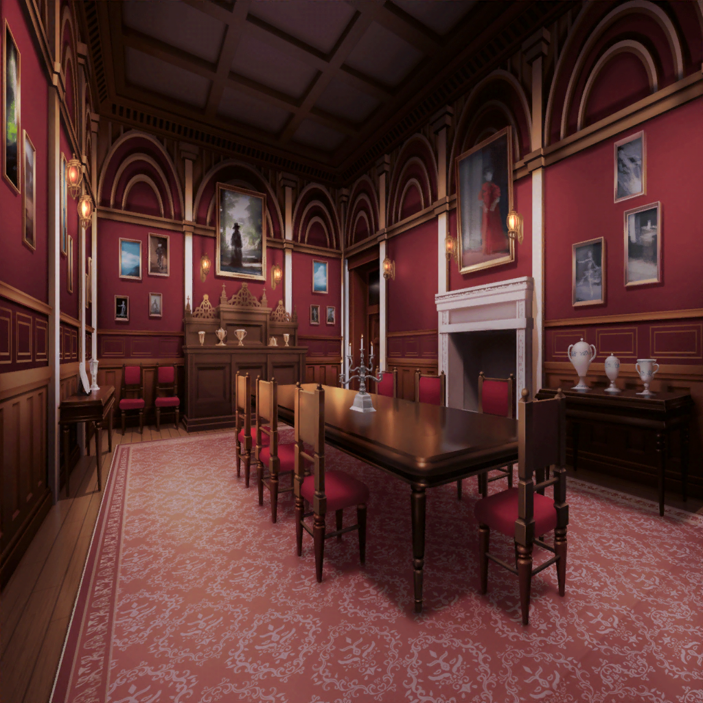

最後の部屋
彩
もしかして……
この中から金のジャック・オー・ランタンを
見つけろってこと！？
麻弥
ん？ 彩さん！
そのカード、まだ続きがありますよ！
『制限時間は深夜１２時』
イヴ
見てくださいっ！
時計の針が急に速く動き出しました！
日菜
たぶんあの時計の針が１２時になるまでに見つけないと
いけないってことだよね
千聖
見た感じだと、あと１０分くらいで
１２時になってしまいそうね……
日菜
あと１０分かー。これだけカボチャがあると結構キツイよね？
それに探すだけって、なんかるんっ♪ とこないな〜。
別にギブアップしちゃってもいいんじゃん？
彩
それは絶対にダメだよ、日菜ちゃん！
みんなでここまで来たんだもん！
諦めないで、最後の１個見つけようよ！
日菜
あ、そういえば彩ちゃん、見つけるのは得意じゃん。
ついに彩ちゃんの見せ場が来たね！
彩
もぉ〜！ 日菜ちゃんも一緒に探すの！
……わ、わあっ！？
イヴ
あ、アヤさんっ！？
麻弥
だ、大丈夫ですか！？
足元にたくさんカボチャが転がっているので、
気をつけてくださいっ！
彩
ご、ごめんね、ちょっとよろけちゃった……
……って、あれ！？
千聖
あ……彩、ちゃん……？
手に持っていた金のジャック・オー・ランタンは……？
彩
ご、ごめん……
転んだ拍子に落としちゃった……！！
日菜
あははっ！ 盛り上がってきたねー！
あたし今、やっとるんっ♪ ときたよ！
千聖
彩ちゃん……
そんな無理やり面白くしなくてもいいのよ……？
彩
ほ、本当にごめんね、みんなっ！
わざとじゃないんだよ！ ホントに！ 信じて！
イヴ
み、みなさん！ こうしている間にも、
時計の針が進んでしまっています！
早く何とかしないと……！
千聖
そうね……！ 悩んでる間も惜しいくらいよね。
彩ちゃん、気にしないで。ここまできたら１つ探すのも
３つ探すのもそう変わらない気がしてきたわ
日菜
そうそう！
それにあたし的には面白い彩ちゃんが見れて、
なんだかやる気が出てきたし！
彩
千聖ちゃん……日菜ちゃん……っ！
なんかちょっと複雑だけど、ありがとぉ〜〜！！
イヴ
アヤさん！ 泣いている場合ではありませんよ！
この窮地、ブシドー精神で乗り切りましょう！
麻弥
彩さん、心配いりませんよ！
みんなでやれば、なんとかなります。
そうやってたくさんのピンチを乗り越えてきましたからね
彩
イヴちゃん……麻弥ちゃん……っ。
……うん、そうだよね！ みんな、ありがとうっ！
彩
よーし、それじゃあ、ラストスパートがんばろうね！
一同
おーーー！
制限時間２分前
彩
あったー！ これで２つ目だね！
日菜
おぉー！ やっぱり彩ちゃん、見つけるの上手いねー。
無くすのも上手いけど
彩
日菜ちゃん！ それはもう言わないでよー！
千聖
それじゃあ残り１つね。
これだけみんなで探して見つからないって、
本当に、ここにあるのかしら……？
麻弥
ど、どうしましょう！ 時間がないですよ！
イヴ
万事休す……という感じですね……
彩
けど、まだ時間はあるよ！
最後まで、絶対に諦めちゃダメだよっ！
諦めなければ、絶対に奇跡は起こる！
彩
……って、あれ？
今、足元にまたカボチャが転がってきたけど……
麻弥
それが探していた金のジャック・オー・ランタン
だったり……！？
彩
……ううん。残念だけど、これも違うみたい
イヴ
そうですか。それは残念です……
日菜
今のカボチャ、どこから転がってきたんだろう？
なんで急に転がってきたの？
千聖
暖炉のほうから転がってきたわよね。
もしかして……！？
彩
あ……っ！！！
千聖ちゃん、私今、同じこと考えてる気がするっ！！
イヴ
あ、アヤさん！？
急に暖炉に向かっていって、どうしたんですか！？
彩
もしかしたら、暖炉の中に引っかかってるのかもしれない！
だからこれだけ探しても、見つからなかったのかなと思って！
彩
んしょ……っと！！
ん〜〜、どこだろう？ あるかなあ……
麻弥
な、なるほど！ 今、カボチャが転がってきたことを考えると
それは十分ありえますね！ 彩さん、どうですか！？
彩
暗くて……見えにくいんだけど……
ん！？ あった！！ ホントにあったよ！！
やっぱり中に引っかかってる！
千聖
彩ちゃん！ 時間はあと１分くらいしかないわ！
早くしないと！
彩
ご、ごめんね！
あとちょっとで手が届きそうなんだけど……
……ん〜〜〜〜！！
イヴ
あ、アヤさん……！
麻弥
がんばってくださいっ！
日菜
彩ちゃん、あたしの背中に乗っていーよ！
そしたら手、届くんじゃない？
彩
……え？ 背中って……
日菜ちゃん、いいの！？
日菜
ほらほら、時間ないんだから、早く！
彩
そ、それじゃあゴメンね、日菜ちゃん！
よいしょ、っと……えいっ！！
彩
やったー！ 取れた、取れたよーっ！
麻弥
や、やりましたね、彩さん、日菜さん！
見事なコンビプレーでしたっ！
千聖
彩ちゃん、金のジャック・オー・ランタンを扉に！
彩
う、うん！
それじゃあ、いくよーー！ せーのっ！
彩
や、やった……っ！ 開いた〜〜〜〜！！！
イヴ
やりましたね、アヤさん！！ お見事でした！
麻弥
時計の針は、１２時直前のところで止まったみたいです。
本当にギリギリだったんですね……！
千聖
最後は彩ちゃんの諦めない気持ちが、
奇跡を引き寄せたのかもしれないわね
日菜
さっすが彩ちゃん！
やっぱり最後は１番いいとこ持ってくよねー！
彩
う、ううん……こうやって諦めないで無事に
脱出できたのは、ホントに、みんなのおかげだよ！
……うう～、みんな本当にありがとうね
千聖
ふふ。その続きは、あっちで話さない？
ほら、見て。
扉の向こうは、パーティ会場になっていたみたいよ
彩
え！？ パーティ！？
わあっ……！ ホントだ！
麻弥
どうやらスタッフさんが用意してくれていたみたいですね。
ホテルの人達も、待ってくれていますよ！
イヴ
たくさんごちそうが並んでいますね！
早く行きましょう！
日菜
おー！ いこういこうー！

大広間
麻弥
さ、彩さん！ みなさんがお待ちかねですよ！
ここはぜひ、彩さんからひと言お願いします！
彩
え！？ ひ、ひと言！？ 私が！？
え、えっとそれじゃあ……やっぱりこれかな？
彩
えと……それじゃあ……まん丸お山に彩りを！
Pastel＊Palettes、ふわふわピンク担当の、丸山彩でーす！
みんなーっ、ハッピーハロウィーーーン！
千聖
ちょ、ちょっと彩ちゃん……っ！？
彩ちゃんの手……真っ黒なんだけど……
彩
……えっ！？ わあ〜〜、ホントだ……！
暖炉の中であちこちいじったから、真っ黒になっちゃったみたい
日菜
あははは！ 超真っ黒になってる！
彩
うう、キレイに締めたかったのに〜〜！！
千聖
ふふふっ！ それじゃつまらないわ。
それでこそ、彩ちゃんらしいわよ♪